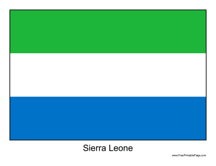

Welcome to My Web Development Journey
About Me
I am so happy to be path of this great Institution(Brigham Young University). I am so much exited and personate about learning new things to enhance my skills and be better fit for the emerging job trends. Acquiring skills in Software development is my top priority, and I am certain to be in the right place to make that dream comes true.
Sierra Leone's Flag

Sierra Leone is a country in West Africa known for its beautiful beaches and rich cultural heritage. Religious tolerance is very high.